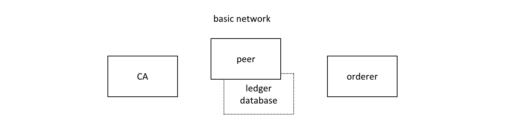
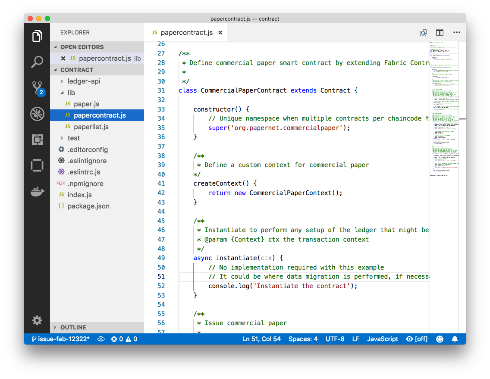
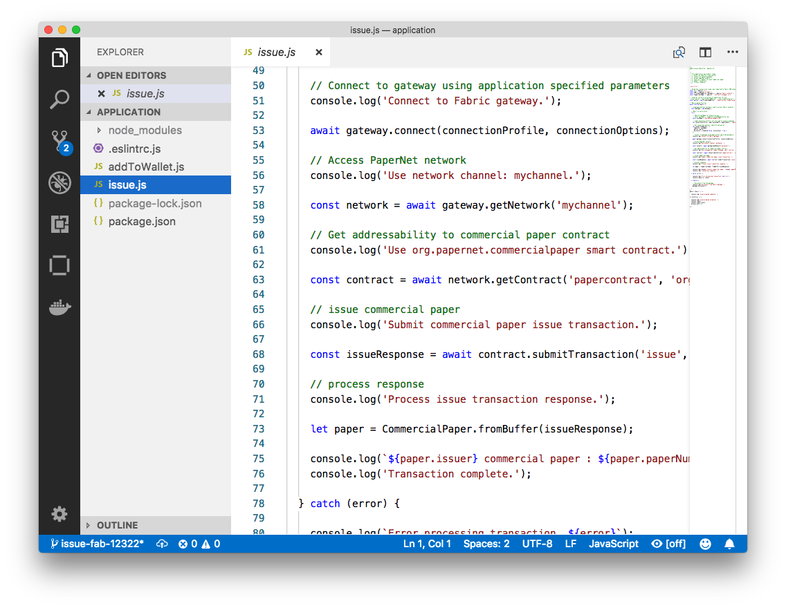

Commercial paper tutorial¶
Audience: Architects, application and smart contract developers, administrators
This tutorial will show you how to install and use a commercial paper sample application and smart contract. It is a task-oriented topic, so it emphasizes procedures above concepts. When you’d like to understand the concepts in more detail, you can read the Developing Applications topic.
 commercialpaper.tutorial In this tutorial
two organizations, MagnetoCorp and DigiBank, trade commercial paper with each
other using PaperNet, a Hyperledger Fabric blockchain network.
commercialpaper.tutorial In this tutorial
two organizations, MagnetoCorp and DigiBank, trade commercial paper with each
other using PaperNet, a Hyperledger Fabric blockchain network.
Once you’ve set up a basic network, you’ll act as Isabella, an employee of MagnetoCorp, who will issue a commercial paper on its behalf. You’ll then switch hats to take the role of Balaji, an employee of DigiBank, who will buy this commercial paper, hold it for a period of time, and then redeem it with MagnetoCorp for a small profit.
You’ll act as an developer, end user, and administrator, each in different organizations, performing the following steps designed to help you understand what it’s like to collaborate as two different organizations working independently, but according to mutually agreed rules in a Hyperledger Fabric network.
- Set up machine and download samples
- Create a network
- Understand the structure of a smart contract
- Work as an organization, MagnetoCorp, to install and instantiate smart contract
- Understand the structure of a MagnetoCorp application, including its dependencies
- Configure and use a wallet and identities
- Run a MagnetoCorp application to issue a commercial paper
- Understand how a second organization, Digibank, uses the smart contract in their applications
- As Digibank, run applications that buy and redeem commercial paper
This tutorial has been tested on MacOS and Ubuntu, and should work on other Linux distributions. A Windows version is under development.
Prerequisites¶
Before you start, you must install some prerequisite technology required by the tutorial. We’ve kept these to a minimum so that you can get going quickly.
You must have the following technologies installed:
- Node version 8.9.0, or higher. Node is a JavaScript runtime that you can use to run applications and smart contracts. You are recommended to use the LTS (Long Term Support) version of node. Install node here.
- Docker version 18.06, or higher. Docker help developers and administrators create standard environments for building and running applications and smart contracts. Hyperledger Fabric is provided as a set of Docker images, and the PaperNet smart contract will run in a docker container. Install Docker here.
You will find it helpful to install the following technologies:
A source code editor, such as Visual Studio Code version 1.28, or higher. VS Code will help you develop and test your application and smart contract. Install VS Code here.
Many excellent code editors are available including Atom, Sublime Text and Brackets.
You may find it helpful to install the following technologies as you become more experienced with application and smart contract development. There’s no requirement to install these when you first run the tutorial:
- Node Version Manager. NVM helps you easily switch between different versions of node – it can be really helpful if you’re working on multiple projects at the same time. Install NVM here.
Download samples¶
The commercial paper tutorial is one of the Hyperledger Fabric
samples held in a public
GitHub repository called fabric-samples. As you’re
going to run the tutorial on your machine, your first task is to download the
fabric-samples repository.
 commercialpaper.download Download the
commercialpaper.download Download the
fabric-samples GitHub repository to your local machine.
$GOPATH is an important environment variable in Hyperledger Fabric; it
identifies the root directory for installation. It is important to get right no
matter which programming language you’re using! Open a new terminal window and
check your $GOPATH is set using the env command:
$ env
...
GOPATH=/Users/username/go
NVM_BIN=/Users/username/.nvm/versions/node/v8.11.2/bin
NVM_IOJS_ORG_MIRROR=https://iojs.org/dist
...
Use the following
instructions if your
$GOPATH is not set.
You can now create a directory relative to $GOPATHwhere fabric-samples will
be installed:
$ mkdir -p $GOPATH/src/github.com/hyperledger/
$ cd $GOPATH/src/github.com/hyperledger/
Use the git clone command to copy
fabric-samples repository to
this location:
$ git clone https://github.com/hyperledger/fabric-samples.git
Feel free to examine the directory structure of fabric-samples:
$ cd fabric-samples
$ ls
CODE_OF_CONDUCT.md balance-transfer fabric-ca
CONTRIBUTING.md basic-network first-network
Jenkinsfile chaincode high-throughput
LICENSE chaincode-docker-devmode scripts
MAINTAINERS.md commercial-paper README.md
fabcar
Notice the commercial-paper directory – that’s where our sample is located!
You’ve now completed the first stage of the tutorial! As you proceed, you’ll open multiple command windows open for different users and components. For example:
- to run applications on behalf of Isabella and Balaji who will trade commercial paper with each other
- to issue commands to on behalf of administrators from MagnetoCorp and DigiBank, including installing and instantiating smart contracts
- to show peer, orderer and CA log output
We’ll make it clear when you should run a command from particular command window; for example:
(isabella)$ ls
indicates that you should run the ls command from Isabella’s window.
Create network¶
The tutorial currently uses the basic network; it will be updated soon to a configuration which better reflects the multi-organization structure of PaperNet. For now, this network is sufficient to show you how to develop an application and smart contract.
commercialpaper.network The Hyperledger Fabric basic network comprises a peer and its ledger database, an orderer and a certificate authority (CA). Each of these components runs as a docker container.
The peer, its ledger, the orderer and the CA each run in the their own docker container. In production environments, organizations typically use existing CAs that are shared with other systems; they’re not dedicated to the Fabric network.
You can manage the basic network using the commands and configuration included
in the fabric-samples\basic-network directory. Let’s start the network on your
local machine with the start.sh shell script:
$ cd fabric-samples/basic-network
$ ./start.sh
docker-compose -f docker-compose.yml up -d ca.example.com orderer.example.com peer0.org1.example.com couchdb
Creating network "net_basic" with the default driver
Pulling ca.example.com (hyperledger/fabric-ca:)...
latest: Pulling from hyperledger/fabric-ca
3b37166ec614: Pull complete
504facff238f: Pull complete
(...)
Pulling orderer.example.com (hyperledger/fabric-orderer:)...
latest: Pulling from hyperledger/fabric-orderer
3b37166ec614: Already exists
504facff238f: Already exists
(...)
Pulling couchdb (hyperledger/fabric-couchdb:)...
latest: Pulling from hyperledger/fabric-couchdb
3b37166ec614: Already exists
504facff238f: Already exists
(...)
Pulling peer0.org1.example.com (hyperledger/fabric-peer:)...
latest: Pulling from hyperledger/fabric-peer
3b37166ec614: Already exists
504facff238f: Already exists
(...)
Creating orderer.example.com ... done
Creating couchdb ... done
Creating ca.example.com ... done
Creating peer0.org1.example.com ... done
(...)
2018-11-07 13:47:31.634 UTC [channelCmd] InitCmdFactory -> INFO 001 Endorser and orderer connections initialized
2018-11-07 13:47:31.730 UTC [channelCmd] executeJoin -> INFO 002 Successfully submitted proposal to join channel
Notice how the docker-compose -f docker-compose.yml up -d ca.example.com...
command pulls the four Hyperledger Fabric container images from
DockerHub, and then starts them. These containers
have the most up-to-date version of the software for these Hyperledger Fabric
components. Feel free to explore the basic-network directory – we’ll use
much of its contents during this tutorial.
You can list the docker containers that are running the basic-network components
using the docker ps command:
$ docker ps
CONTAINER ID IMAGE COMMAND CREATED STATUS PORTS NAMES
ada3d078989b hyperledger/fabric-peer "peer node start" About a minute ago Up About a minute 0.0.0.0:7051->7051/tcp, 0.0.0.0:7053->7053/tcp peer0.org1.example.com
1fa1fd107bfb hyperledger/fabric-orderer "orderer" About a minute ago Up About a minute 0.0.0.0:7050->7050/tcp orderer.example.com
53fe614274f7 hyperledger/fabric-couchdb "tini -- /docker-ent…" About a minute ago Up About a minute 4369/tcp, 9100/tcp, 0.0.0.0:5984->5984/tcp couchdb
469201085a20 hyperledger/fabric-ca "sh -c 'fabric-ca-se…" About a minute ago Up About a minute 0.0.0.0:7054->7054/tcp ca.example.com
See if you can map these containers to the basic-network (you may need to horizontally scroll to locate the information):
- A peer
peer0.org1.example.comis running in containerada3d078989b - An orderer
orderer.example.comis running in container1fa1fd107bfb - A CouchDB database
couchdbis running in container53fe614274f7 - A CA
ca.example.comis running in container469201085a20
These containers all form a docker network
called net_basic. You can view the network with the docker network command:
$ docker network inspect net_basic
{
"Name": "net_basic",
"Id": "62e9d37d00a0eda6c6301a76022c695f8e01258edaba6f65e876166164466ee5",
"Created": "2018-11-07T13:46:30.4992927Z",
"Containers": {
"1fa1fd107bfbe61522e4a26a57c2178d82b2918d5d423e7ee626c79b8a233624": {
"Name": "orderer.example.com",
"IPv4Address": "172.20.0.4/16",
},
"469201085a20b6a8f476d1ac993abce3103e59e3a23b9125032b77b02b715f2c": {
"Name": "ca.example.com",
"IPv4Address": "172.20.0.2/16",
},
"53fe614274f7a40392210f980b53b421e242484dd3deac52bbfe49cb636ce720": {
"Name": "couchdb",
"IPv4Address": "172.20.0.3/16",
},
"ada3d078989b568c6e060fa7bf62301b4bf55bed8ac1c938d514c81c42d8727a": {
"Name": "peer0.org1.example.com",
"IPv4Address": "172.20.0.5/16",
}
},
"Labels": {}
}
See how the four containers use different IP addresses, while being part of a single docker network. (We’ve abbreviated the output for clarity.)
To recap: you’ve downloaded the Hyperledger Fabric samples repository from GitHub and you’ve got the basic network running on your local machine. Let’s now start to play the role of MagnetoCorp, who wish to trade commercial paper.
Working as MagnetoCorp¶
To monitor the MagnetoCorp components of PaperNet, an administrator can view the
aggregated output from a set of docker containers using the logspout
tool. It collects the
different output streams into one place, making it easy to see what’s happening
from a single window. This can be really helpful for administrators when
installing smart contracts or for developers when invoking smart contracts, for
example.
Let’s now monitor PaperNet as a MagnetoCorp administrator. Open a new window in
the fabric-samples directory, and locate and run the monitordocker.sh
script to start the logspout tool for the PaperNet docker containers
associated with the docker network net_basic:
(magnetocorp admin)$ cd commercial-paper/organization/magnetocorp/configuration/cli/
(magnetocorp admin)$ ./monitordocker.sh net_basic
...
latest: Pulling from gliderlabs/logspout
4fe2ade4980c: Pull complete
decca452f519: Pull complete
(...)
Starting monitoring on all containers on the network net_basic
b7f3586e5d0233de5a454df369b8eadab0613886fc9877529587345fc01a3582
Note that you can pass a port number to the above command if the default port in monitordocker.sh is already in use.
(magnetocorp admin)$ ./monitordocker.sh net_basic <port_number>
This window will now show output from the docker containers, so let’s start another terminal window which will allow the MagnetoCorp administrator to interact with the network.
 commercialpaper.workmagneto A MagnetoCorp
administrator interacts with the network via a docker container.
commercialpaper.workmagneto A MagnetoCorp
administrator interacts with the network via a docker container.
To interact with PaperNet, a MagnetoCorp administrator needs to use the
Hyperledger Fabric peer commands. Conveniently, these are available pre-built
in the hyperledger/fabric-tools
docker image.
Let’s start a MagnetoCorp-specific docker container for the administrator using
the docker-compose command:
(magnetocorp admin)$ cd commercial-paper/organization/magnetocorp/configuration/cli/
(magnetocorp admin)$ docker-compose -f docker-compose.yml up -d cliMagnetoCorp
Pulling cliMagnetoCorp (hyperledger/fabric-tools:)...
latest: Pulling from hyperledger/fabric-tools
3b37166ec614: Already exists
(...)
Digest: sha256:058cff3b378c1f3ebe35d56deb7bf33171bf19b327d91b452991509b8e9c7870
Status: Downloaded newer image for hyperledger/fabric-tools:latest
Creating cliMagnetoCorp ... done
Again, see how the hyperledger/fabric-tools docker image was retrieved from
Docker Hub and added to the network:
(magnetocorp admin)$ docker ps
CONTAINER ID IMAGE COMMAND CREATED STATUS PORTS NAMES
562a88b25149 hyperledger/fabric-tools "/bin/bash" About a minute ago Up About a minute cliMagnetoCorp
b7f3586e5d02 gliderlabs/logspout "/bin/logspout" 7 minutes ago Up 7 minutes 127.0.0.1:8000->80/tcp logspout
ada3d078989b hyperledger/fabric-peer "peer node start" 29 minutes ago Up 29 minutes 0.0.0.0:7051->7051/tcp, 0.0.0.0:7053->7053/tcp peer0.org1.example.com
1fa1fd107bfb hyperledger/fabric-orderer "orderer" 29 minutes ago Up 29 minutes 0.0.0.0:7050->7050/tcp orderer.example.com
53fe614274f7 hyperledger/fabric-couchdb "tini -- /docker-ent…" 29 minutes ago Up 29 minutes 4369/tcp, 9100/tcp, 0.0.0.0:5984->5984/tcp couchdb
469201085a20 hyperledger/fabric-ca "sh -c 'fabric-ca-se…" 29 minutes ago Up 29 minutes 0.0.0.0:7054->7054/tcp ca.example.com
The MagnetoCorp administrator will use the command line in container
562a88b25149 to interact with PaperNet. Notice also the logspout container
b7f3586e5d02; this is capturing the output of all other docker containers for
the monitordocker.sh command.
Let’s now use this command line to interact with PaperNet as the MagnetoCorp administrator.
Smart contract¶
issue, buy and redeem are the three functions at the heart of the PaperNet
smart contract. It is used by applications to submit transactions which
correspondingly issue, buy and redeem commercial paper on the ledger. Our next
task is to examine this smart contract.
Open a new terminal window to represent a MagnetoCorp developer and change to the directory that contains MagnetoCorp’s copy of the smart contract to view it with your chosen editor (VS Code in this tutorial):
(magnetocorp developer)$ cd commercial-paper/organization/magnetocorp/contract
(magnetocorp developer)$ code .
In the lib directory of the folder, you’ll see papercontract.js file – this
contains the commercial paper smart contract!
commercialpaper.vscode1 An example code
editor displaying the commercial paper smart contract in papercontract.js
papercontract.js is a JavaScript program designed to run in the node.js
environment. Note the following key program lines:
const { Contract, Context } = require('fabric-contract-api');This statement brings into scope two key Hyperledger Fabric classes that will be used extensively by the smart contract –
ContractandContext. You can learn more about these classes in thefabric-shimJSDOCS.class CommercialPaperContract extends Contract {This defines the smart contract class
CommercialPaperContractbased on the built-in FabricContractclass. The methods which implement the key transactions toissue,buyandredeemcommercial paper are defined within this class.async issue(ctx, issuer, paperNumber, issueDateTime, maturityDateTime...) {This method defines the commercial paper
issuetransaction for PaperNet. The parameters that are passed to this method will be used to create the new commercial paper.Locate and examine the
buyandredeemtransactions within the smart contract.let paper = CommercialPaper.createInstance(issuer, paperNumber, issueDateTime...);Within the
issuetransaction, this statement creates a new commercial paper in memory using theCommercialPaperclass with the supplied transaction inputs. Examine thebuyandredeemtransactions to see how they similarly use this class.await ctx.paperList.addPaper(paper);This statement adds the new commercial paper to the ledger using
ctx.paperList, an instance of aPaperListclass that was created when the smart contract contextCommercialPaperContextwas initialized. Again, examine thebuyandredeemmethods to see how they use this class.return paper.toBuffer();This statement returns a binary buffer as response from the
issuetransaction for processing by the caller of the smart contract.
Feel free to examine other files in the contract directory to understand how
the smart contract works, and read in detail how papercontract.js is
designed in the smart contract topic.
Install contract¶
Before papercontract can be invoked by applications, it must be installed onto
the appropriate peer nodes in PaperNet. MagnetoCorp and DigiBank administrators
are able to install papercontract onto peers over which they respectively have
authority.
 commercialpaper.install A MagnetoCorp
administrator installs a copy of the
commercialpaper.install A MagnetoCorp
administrator installs a copy of the papercontract onto a MagnetoCorp peer.
Smart contracts are the focus of application development, and are contained within a Hyperledger Fabric artifact called chaincode. One or more smart contracts can be defined within a single chaincode, and installing a chaincode will allow them to be consumed by the different organizations in PaperNet. It means that only administrators need to worry about chaincode; everyone else can think in terms of smart contracts.
The MagnetoCorp administrator uses the peer chaincode install command to copy
the papercontract smart contract from their local machine’s file system to the
file system within the target peer’s docker container. Once the smart contract
is installed on the peer and instantiated on a channel,
papercontract can be invoked by applications, and interact with the ledger
database via the
putState()
and
getState()
Fabric APIs. Examine how these APIs are used by StateList class within
ledger-api\statelist.js.
Let’s now install papercontract as the MagnetoCorp administrator. In the
MagnetoCorp administrator’s command window, use the docker exec command to run
the peer chaincode install command in the cliMagnetCorp container:
(magnetocorp admin)$ docker exec cliMagnetoCorp peer chaincode install -n papercontract -v 0 -p /opt/gopath/src/github.com/contract -l node
2018-11-07 14:21:48.400 UTC [chaincodeCmd] checkChaincodeCmdParams -> INFO 001 Using default escc
2018-11-07 14:21:48.400 UTC [chaincodeCmd] checkChaincodeCmdParams -> INFO 002 Using default vscc
2018-11-07 14:21:48.466 UTC [chaincodeCmd] install -> INFO 003 Installed remotely response:<status:200 payload:"OK" >
The cliMagnetCorp container has set
CORE_PEER_ADDRESS=peer0.org1.example.com:7051 to target its commands to
peer0.org1.example.com, and the INFO 003 Installed remotely... indicates
papercontract has been successfully installed on this peer. Currently, the
MagnetoCorp administrator only has to install a copy of papercontract on a
single MagentoCorp peer.
Note how peer chaincode install command specified the smart contract path,
-p, relative to the cliMagnetoCorp container’s file system:
/opt/gopath/src/github.com/contract. This path has been mapped to the local
file system path .../organization/magnetocorp/contract via the
magnetocorp/configuration/cli/docker-compose.yml file:
volumes:
- ...
- ./../../../../organization/magnetocorp:/opt/gopath/src/github.com/
- ...
See how the volume directive maps organization/magnetocorp to
/opt/gopath/src/github.com/ providing this container access to your local file
system where MagnetoCorp’s copy of the papercontract smart contract is held.
You can read more about docker compose
here and peer chaincode install
command here.
Instantiate contract¶
Now that papercontract chaincode containing the CommercialPaper smart
contract is installed on the required PaperNet peers, an administrator can make
it available to different network channels, so that it can be invoked by
applications connected to those channels. Because we’re using the basic network
configuration for PaperNet, we’re only going to make papercontract available
in a single network channel, mychannel.
 commercialpaper.instant A MagnetoCorp
administrator instantiates
commercialpaper.instant A MagnetoCorp
administrator instantiates papercontract chaincode containing the smart
contract. A new docker chaincode container will be created to run
papercontract.
The MagnetoCorp administrator uses the peer chaincode instantiate command to
instantiate papercontract on mychannel:
(magnetocorp admin)$ docker exec cliMagnetoCorp peer chaincode instantiate -n papercontract -v 0 -l node -c '{"Args":["org.papernet.commercialpaper:instantiate"]}' -C mychannel -P "AND ('Org1MSP.member')"
2018-11-07 14:22:11.162 UTC [chaincodeCmd] InitCmdFactory -> INFO 001 Retrieved channel (mychannel) orderer endpoint: orderer.example.com:7050
2018-11-07 14:22:11.163 UTC [chaincodeCmd] checkChaincodeCmdParams -> INFO 002 Using default escc
2018-11-07 14:22:11.163 UTC [chaincodeCmd] checkChaincodeCmdParams -> INFO 003 Using default vscc
One of the most important parameters on instantiate is -P. It specifies the
endorsement policy for papercontract,
describing the set of organizations that must endorse (execute and sign) a
transaction before it can be determined as valid. All transactions, whether
valid or invalid, will be recorded on the ledger blockchain,
but only valid transactions will update the world
state.
In passing, see how instantiate passes the orderer address
orderer.example.com:7050. This is because it additionally submits an
instantiate transaction to the orderer, which will include the transaction
in the next block and distribute it to all peers that have joined
mychannel, enabling any peer to execute the chaincode in their own
isolated chaincode container. Note that instantiate only needs to be issued
once for papercontract even though typically it is installed on many peers.
See how a papercontract container has been started with the docker ps
command:
(magnetocorp admin)$ docker ps
CONTAINER ID IMAGE COMMAND CREATED STATUS PORTS NAMES
4fac1b91bfda dev-peer0.org1.example.com-papercontract-0-d96... "/bin/sh -c 'cd /usr…" 2 minutes ago Up 2 minutes dev-peer0.org1.example.com-papercontract-0
Notice that the container is named
dev-peer0.org1.example.com-papercontract-0-d96... to indicate which peer
started it, and the fact that it’s running papercontract version 0.
Now that we’ve got a basic PaperNet up and running, and papercontract
installed and instantiated, let’s turn our attention to the MagnetoCorp
application which issues a commercial paper.
Application structure¶
The smart contract contained in papercontract is called by MagnetoCorp’s
application issue.js. Isabella uses this application to submit a transaction
to the ledger which issues commercial paper 00001. Let’s quickly examine how
the issue application works.
 commercialpaper.application A gateway
allows an application to focus on transaction generation, submission and
response. It coordinates transaction proposal, ordering and notification
processing between the different network components.
commercialpaper.application A gateway
allows an application to focus on transaction generation, submission and
response. It coordinates transaction proposal, ordering and notification
processing between the different network components.
Because the issue application submits transactions on behalf of Isabella, it
starts by retrieving Isabella’s X.509 certificate from her
wallet, which might be stored on the local file
system or a Hardware Security Module
HSM. The issue
application is then able to utilize the gateway to submit transactions on the
channel. The Hyperledger Fabric SDK provides a
gateway abstraction so that applications can
focus on application logic while delegating network interaction to the
gateway. Gateways and wallets make it straightforward to write Hyperledger
Fabric applications.
So let’s examine the issue application that Isabella is going to use. open a
separate terminal window for her, and in fabric-samples locate the MagnetoCorp
/application folder:
(magnetocorp user)$ cd commercial-paper/organization/magnetocorp/application/
(magnetocorp user)$ ls
addToWallet.js issue.js package.json
addToWallet.js is the program that Isabella is going to use to load her
identity into her wallet, and issue.js will use this identity to create
commercial paper 00001 on behalf of MagnetoCorp by invoking papercontract.
Change to the directory that contains MagnetoCorp’s copy of the application
issue.js, and use your code editor to examine it:
(magnetocorp user)$ cd commercial-paper/organization/magnetocorp/application
(magnetocorp user)$ code issue.js
Examine this directory; it contains the issue application and all its dependencies.
commercialpaper.vscode2 A code editor displaying the contents of the commercial paper application directory.
Note the following key program lines in issue.js:
const { FileSystemWallet, Gateway } = require('fabric-network');This statement brings two key Hyperledger Fabric SDK classes into scope –
WalletandGateway. Because Isabella’s X.509 certificate is in the local file system, the application usesFileSystemWallet.const wallet = new FileSystemWallet('../identity/user/isabella/wallet');This statement identifies that the application will use
isabellawallet when it connects to the blockchain network channel. The application will select a particular identity withinisabellawallet. (The wallet must have been loaded with the Isabella’s X.509 certificate – that’s whataddToWallet.jsdoes.)await gateway.connect(connectionProfile, connectionOptions);This line of code connects to the network using the gateway identified by
connectionProfile, using the identity referred to inConnectionOptions.See how
../gateway/networkConnection.yamlandUser1@org1.example.comare used for these values respectively.const network = await gateway.getNetwork('mychannel');This connects the application to the network channel
mychannel, where thepapercontractwas previously instantiated.const contract = await network.getContract('papercontract', 'org.papernet.comm...');
This statement gives the application addressability to smart contract defined
by the namespace org.papernet.commercialpaper within papercontract. Once
an application has issued getContract, it can submit any transaction
implemented within it.
const issueResponse = await contract.submitTransaction('issue', 'MagnetoCorp', '00001'...);This line of code submits the a transaction to the network using the
issuetransaction defined within the smart contract.MagnetoCorp,00001… are the values to be used by theissuetransaction to create a new commercial paper.let paper = CommercialPaper.fromBuffer(issueResponse);This statement processes the response from the
issuetransaction. The response needs to deserialized from a buffer intopaper, aCommercialPaperobject which can interpreted correctly by the application.
Feel free to examine other files in the /application directory to understand
how issue.js works, and read in detail how it is implemented in the
application topic.
Application dependencies¶
The issue.js application is written in JavaScript and designed to run in the
node.js environment that acts as a client to the PaperNet network.
As is common practice, MagnetoCorp’s application is built on many
external node packages – to improve quality and speed of development. Consider
how issue.js includes the js-yaml
package to process the YAML gateway
connection profile, or the fabric-network
package to access the Gateway
and Wallet classes:
const yaml = require('js-yaml');
const { FileSystemWallet, Gateway } = require('fabric-network');
These packages have to be downloaded from npm to the
local file system using the npm install command. By convention, packages must
be installed into an application-relative /node_modules directory for use at
runtime.
Examine the package.json file to see how issue.js identifies the packages to
download and their exact versions:
"dependencies": {
"fabric-network": "^1.4.0-beta",
"fabric-client": "^1.4.0-beta",
"js-yaml": "^3.12.0"
},
npm versioning is very powerful; you can read more about it here.
Let’s install these packages with the npm install command – this may take up
to a minute to complete:
(magnetocorp user)$ npm install
( ) extract:lodash: sill extract ansi-styles@3.2.1
(...)
added 738 packages in 46.701s
See how this command has updated the directory:
(magnetocorp user)$ ls
addToWallet.js node_modules package.json
issue.js package-lock.json
Examine the node_modules directory to see the packages that have been
installed. There are lots, because js-yaml and fabric-network are themselves
built on other npm packages! Helpfully, the package-lock.json
file identifies the exact
versions installed, which can prove invaluable if you want to exactly reproduce
environments; to test, diagnose problems or deliver proven applications for
example.
Wallet¶
Isabella is almost ready to run issue.js to issue MagnetoCorp commercial paper
00001; there’s just one remaining task to perform! As issue.js acts on
behalf of Isabella, and therefore MagnetoCorp, it will use identity from her
wallet that reflects these facts. We now need to
perform this one-time activity of adding appropriate X.509 credentials to her
wallet.
In Isabella’s terminal window, run the addToWallet.js program to add identity
information to her wallet:
(isabella)$ node addToWallet.js
done
Isabella can store multiple identities in her wallet, though in our example, she
only uses one – User1@org.example.com. This identity is currently associated
with the basic network, rather than a more realistic PaperNet configuration –
we’ll update this tutorial soon.
addToWallet.js is a simple file-copying program which you can examine at your
leisure. It moves an identity from the basic network sample to Isabella’s
wallet. Let’s focus on the result of this program – the contents of
the wallet which will be used to submit transactions to PaperNet:
(isabella)$ ls ../identity/user/isabella/wallet/
User1@org1.example.com
See how the directory structure maps the User1@org1.example.com identity –
other identities used by Isabella would have their own folder. Within this
directory you’ll find the identity information that issue.js will use on
behalf of isabella:
(isabella)$ ls ../identity/user/isabella/wallet/User1@org1.example.com
User1@org1.example.com c75bd6911a...-priv c75bd6911a...-pub
Notice:
a private key
c75bd6911a...-privused to sign transactions on Isabella’s behalf, but not distributed outside of her immediate control.a public key
c75bd6911a...-pubwhich is cryptographically linked to Isabella’s private key. This is wholly contained within Isabella’s X.509 certificate.a certificate
User1@org.example.comwhich contains Isabella’s public key and other X.509 attributes added by the Certificate Authority at certificate creation. This certificate is distributed to the network so that different actors at different times can cryptographically verify information created by Isabella’s private key.Learn more about certificates here. In practice, the certificate file also contains some Fabric-specific metadata such as Isabella’s organization and role – read more in the wallet topic.
Issue application¶
Isabella can now use issue.js to submit a transaction that will issue
MagnetoCorp commercial paper 00001:
(isabella)$ node issue.js
Connect to Fabric gateway.
Use network channel: mychannel.
Use org.papernet.commercialpaper smart contract.
Submit commercial paper issue transaction.
Process issue transaction response.
MagnetoCorp commercial paper : 00001 successfully issued for value 5000000
Transaction complete.
Disconnect from Fabric gateway.
Issue program complete.
The node command initializes a node.js environment, and runs issue.js. We
can see from the program output that MagnetoCorp commercial paper 00001 was
issued with a face value of 5M USD.
As you’ve seen, to achieve this, the application invokes the issue transaction
defined in the CommercialPaper smart contract within papercontract.js. This
had been installed and instantiated in the network by the MagnetoCorp
administrator. It’s the smart contract which interacts with the ledger via the
Fabric APIs, most notably putState() and getState(), to represent the new
commercial paper as a vector state within the world state. We’ll see how this
vector state is subsequently manipulated by the buy and redeem transactions
also defined within the smart contract.
All the time, the underlying Fabric SDK handles the transaction endorsement, ordering and notification process, making the application’s logic straightforward; the SDK uses a gateway to abstract away network details and connectionOptions to declare more advanced processing strategies such as transaction retry.
Let’s now follow the lifecycle of MagnetoCorp 00001 by switching our emphasis
to DigiBank, who will buy the commercial paper.
Working as DigiBank¶
Now that commercial paper 00001has been issued by MagnetoCorp, let’s switch
context to interact with PaperNet as employees of DigiBank. First, we’ll act as
administrator who will create a console configured to interact with PaperNet.
Then Balaji, an end user, will use Digibank’s buy application to buy
commercial paper 00001, moving it to the next stage in its lifecycle.
 commercialpaper.workdigi DigiBank
administrators and applications interact with the PaperNet network.
commercialpaper.workdigi DigiBank
administrators and applications interact with the PaperNet network.
As the tutorial currently uses the basic network for PaperNet, the network configuration is quite simple. Administrators use a console similar to MagnetoCorp, but configured for Digibank’s file system. Likewise, Digibank end users will use applications which invoke the same smart contract as MagnetoCorp applications, though they contain Digibank-specific logic and configuration. It’s the smart contract which captures the shared business process, and the ledger which holds the shared business data, no matter which applications call them.
Let’s open up a separate terminal to allow the DigiBank administrator to
interact with PaperNet. In fabric-samples:
(digibank admin)$ cd commercial-paper/organization/digibank/configuration/cli/
(digibank admin)$ docker-compose -f docker-compose.yml up -d cliDigiBank
(...)
Creating cliDigiBank ... done
This docker container is now available for Digibank administrators to interact with the network:
CONTAINER ID IMAGE COMMAND CREATED STATUS PORT NAMES
858c2d2961d4 hyperledger/fabric-tools "/bin/bash" 18 seconds ago Up 18 seconds cliDigiBank
In this tutorial, you’ll use the command line container named cliDigiBank to
interact with the network on behalf of DigiBank. We’ve not shown all the docker
containers, and in the real world DigiBank users would only see the network
components (peers, orderers, CAs) to which they have access.
Digibank’s administrator doesn’t have much to do in this tutorial right now because the PaperNet network configuration is so simple. Let’s turn our attention to Balaji.
Digibank applications¶
Balaji uses DigiBank’s buy application to submit a transaction to the ledger
which transfers ownership of commercial paper 00001 from MagnetoCorp to
DigiBank. The CommercialPaper smart contract is the same as that used by
MagnetoCorp’s application, however the transaction is different this time –
it’s buy rather than issue. Let’s examine how DigiBank’s application works.
Open a separate terminal window for Balaji. In fabric-samples, change to the
DigiBank application directory that contains the application, buy.js, and open
it with your editor:
(balaji)$ cd commercial-paper/organization/digibank/application/
(balaji)$ code buy.js
As you can see, this directory contains both the buy and redeem applications
that will be used by Balaji.
 commercialpaper.vscode3 DigiBank’s
commercial paper directory containing the
commercialpaper.vscode3 DigiBank’s
commercial paper directory containing the buy.js and redeem.js
applications.
DigiBank’s buy.js application is very similar in structure to MagnetoCorp’s
issue.js with two important differences:
Identity: the user is a DigiBank user
Balajirather than MagnetoCorp’sIsabellaconst wallet = new FileSystemWallet('../identity/user/balaji/wallet');`
See how the application uses the
balajiwallet when it connects to the PaperNet network channel.buy.jsselects a particular identity withinbalajiwallet.Transaction: the invoked transaction is
buyrather thanissue`const buyResponse = await contract.submitTransaction('buy', 'MagnetoCorp', '00001'...);`A
buytransaction is submitted with the valuesMagnetoCorp,00001…, that are used by theCommercialPapersmart contract class to transfer ownership of commercial paper00001to DigiBank.
Feel free to examine other files in the application directory to understand
how the application works, and read in detail how buy.js is implemented in
the application topic.
Run as DigiBank¶
The DigiBank applications which buy and redeem commercial paper have a very similar structure to MagnetoCorp’s issue application. Therefore, let’s install their dependencies and set up Balaji’s wallet so that he can use these applications to buy and redeem commercial paper.
Like MagnetoCorp, Digibank must the install the required application packages
using the npm install command, and again, this make take a short time to
complete.
In the DigiBank administrator window, install the application dependencies:
(digibank admin)$ cd commercial-paper/organization/digibank/application/
(digibank admin)$ npm install
( ) extract:lodash: sill extract ansi-styles@3.2.1
(...)
added 738 packages in 46.701s
In Balaji’s terminal window, run the addToWallet.js program to add identity
information to his wallet:
(balaji)$ node addToWallet.js
done
The addToWallet.js program has added identity information for balaji, to his
wallet, which will be used by buy.js and redeem.js to submit transactions to
PaperNet.
Like Isabella, Balaji can store multiple identities in his wallet, though in our
example, he only uses one – Admin@org.example.com. His corresponding wallet
structure digibank/identity/user/balaji/wallet/Admin@org1.example.com
contains is very similar Isabella’s – feel free to examine it.
Buy application¶
Balaji can now use buy.js to submit a transaction that will transfer ownership
of MagnetoCorp commercial paper 00001 to DigiBank.
Run the buy application in Balaji’s window:
(balaji)$ node buy.js
Connect to Fabric gateway.
Use network channel: mychannel.
Use org.papernet.commercialpaper smart contract.
Submit commercial paper buy transaction.
Process buy transaction response.
MagnetoCorp commercial paper : 00001 successfully purchased by DigiBank
Transaction complete.
Disconnect from Fabric gateway.
Buy program complete.
You can see the program output that MagnetoCorp commercial paper 00001 was
successfully purchased by Balaji on behalf of DigiBank. buy.js invoked the
buy transaction defined in the CommercialPaper smart contract which updated
commercial paper 00001 within the world state using the putState() and
getState() Fabric APIs. As you’ve seen, the application logic to buy and issue
commercial paper is very similar, as is the smart contract logic.
Redeem application¶
The final transaction in the lifecycle of commercial paper 00001 is for
DigiBank to redeem it with MagnetoCorp. Balaji uses redeem.js to submit a
transaction to perform the redeem logic within the smart contract.
Run the redeem transaction in Balaji’s window:
(balaji)$ node redeem.js
Connect to Fabric gateway.
Use network channel: mychannel.
Use org.papernet.commercialpaper smart contract.
Submit commercial paper redeem transaction.
Process redeem transaction response.
MagnetoCorp commercial paper : 00001 successfully redeemed with MagnetoCorp
Transaction complete.
Disconnect from Fabric gateway.
Redeem program complete.
Again, see how the commercial paper 00001 was successfully redeemed when
redeem.js invoked the redeem transaction defined in CommercialPaper.
Again, it updated commercial paper 00001 within the world state to reflect
that the ownership returned to MagnetoCorp, the issuer of the paper.
Further reading¶
To understand how applications and smart contracts shown in this tutorial work
in more detail, you’ll find it helpful to read
Developing Applications. This
topic will give you a fuller explanation of the commercial paper scenario, the
PaperNet business network, its actors, and how the applications and smart
contracts they use work in detail.
Also feel free to use this sample to start creating your own applications and smart contracts!